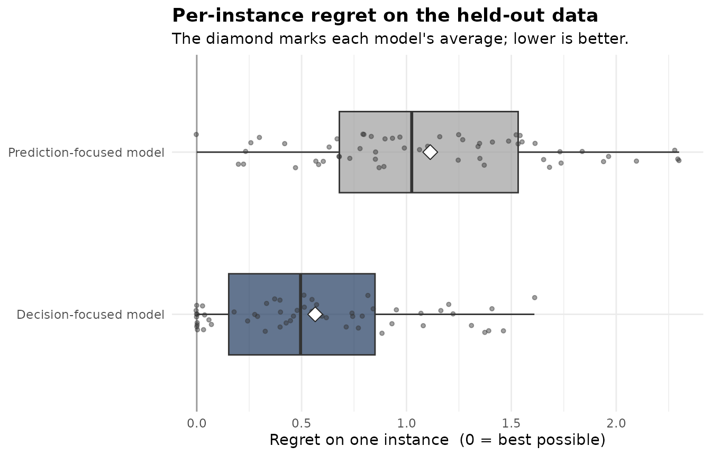

Humanitarian routing with dflasso
Source:vignettes/humanitarian-routing.Rmd
humanitarian-routing.RmdAn aid convoy is routed before the day’s travel times are known, so they are estimated from features and the fastest-looking path is taken. A main road’s time is easy to predict and rarely decides the route. Flood depth on a low crossing is hard to predict, yet it flips the route the day the crossing floods. A model tuned only for prediction keeps the main road and drops the flood depth, then sends a truck onto the flooded crossing.
dflasso keeps the features that move the route, weak predictors
included, and refits. This vignette walks the whole loop on the
aid_routing data: build the rows, fit, decide tomorrow’s
route, and check on held-out days whether the decision focus lowered
regret against an ordinary prediction-focused model.
aid_routing is the package’s demo dataset, and it is
simulated: flood_depth and mud_depth predict
travel time poorly yet decide the route on wet days. So read the method
here, and take the magnitudes as illustrative. On other data the regret
check is how to tell.
The problem, set up once
shortest_path_problem() is a built-in. It fixes the
sense to “min” and solves with Dijkstra, so no solver function is
needed.
routing <- shortest_path_problem()From graph tables to model rows
aid_routing is not a flat table. It is a list of graph
objects: the arcs and their per-arc features, the nodes, a day panel
with each day’s closures, and the observed travel times.
prepare_instances() joins them into the rows
dfl_fit(), decide() and regret()
take, one row per open arc per day, and hands back a coverage report.
Each row is one element (here, one arc on one day), and the scenario
column groups a day’s rows into an instance, the routing problem to
solve. See ?dflasso-glossary. The which
argument selects a slice of the demo’s day panel; on other data the rows
are chosen directly.
train <- prepare_instances(aid_routing, which = "training")
dim(train$x)
#> [1] 5840 28
head(train$coverage)
#> scenario n_elements n_cost_observed n_cost_missing coverage_fraction
#> 1 2026-06-01 23 23 0 1.0000000
#> 2 2026-06-02 23 20 3 0.8695652
#> 3 2026-06-03 23 23 0 1.0000000
#> 4 2026-06-04 23 23 0 1.0000000
#> 5 2026-06-05 24 24 0 1.0000000
#> 6 2026-06-06 23 23 0 1.0000000
#> n_solve_set n_solve_set_missing proxy_eligible set_aside_reason
#> 1 23 0 TRUE <NA>
#> 2 20 0 TRUE <NA>
#> 3 23 0 TRUE <NA>
#> 4 23 0 TRUE <NA>
#> 5 24 0 TRUE <NA>
#> 6 23 0 TRUE <NA>Read the report. Only the driven path is observed, so most (date, arc) pairs never get a time and many days are set aside for scoring. Every observed time trains the cost model; a day counts for scoring only when every arc the router might use has an observed time, so most days are set aside by design. These few rows are clean, but across the full panel only about 45% of days clear the bar for scoring.
Fit it
One call with sensible defaults. With the seed named, re-runs
reproduce the same features and decisions. The fit here lowers
n_splits from the default of 15 to 10 and runs sequentially
so it knits fast; on a real graph leave the default and add
workers = 8 for parallel splits. The
element_id argument is the per-arc label that ties model
rows back to graph arcs; prepare_instances() builds it, and
the _new and _test forms are the same label
for decide() and regret() data.
instances carries each day’s graph for the solver: its open
arcs (closed ones already removed), the node count, and that day’s
origin and destination; prepare_instances() builds it
here.
model <- dfl_fit(train$x, train$cost, train$scenario,
problem = routing,
instances = train$instances,
element_id = train$element_id,
control = dfl_control(seed = 2026, n_splits = 10L))
model
#> <DecisionFocusedLasso: solver, sense=min, 28 features, 3 kept, 112 instances scored>summary() is the one-screen report: how many features
were kept, which weak but decisive ones the method rescued, and the
reproducibility fields. The planted flood_depth and
mud_depth are rescued, as intended.
summary(model)
#> Summary of a decision-focused cost model (dflasso)
#> Objective: minimise cost over 112 instances scored, 28 features.
#> 112 of 250 instances scored; 138 set aside for missing or partial cost coverage (see regret() and ?dflasso-troubleshooting).
#>
#> FEATURES KEPT
#> 3 of 28 features were kept for the decision.
#> 2 of these are decision-driven rescues, weak at predicting cost on their own, but
#> they move the decision, so the model kept them:
#> flood_depth, mud_depth
#> See tidy(fit) for every feature, its coefficient, and its role.
#>
#> WHAT EACH FEATURE IS FOR (across all features, by how they behave)
#> decision-relevant 2 were kept for the decision (rescued by the decision step)
#> prediction-relevant 1 were kept by the accuracy step (the usual reason)
#> both 0 do both
#> neither 25 not used by either model
#> These roles come from one random reshuffle of the instances, so they can
#> shift a little under a different seed. Judge a feature by its score in
#> tidy(fit), not by the bare label.
#>
#> DOES THE DECISION FOCUS PAY OFF? (lower regret is better)
#> Regret = how much worse a decision was than the best possible in
#> hindsight, averaged over instances.
#> This needs held-out data. Run regret(fit, x_test, cost_test,
#> scenario_test) to compare against the prediction-focused model.
#> See ?dflasso-validation.
#>
#> HOW HARD FEATURES WERE FILTERED
#> Filtering strength 0.120, chosen automatically by trying many settings and
#> keeping the best; smaller keeps more features. (this setting is called
#> lambda)
#>
#> REPRODUCIBILITY
#> Fit with seed 2026; re-running with this seed gives bit-identical features,
#> scores, and decisions. Pass seed = <int> to fix it up front and quote
#> that number.
#> Decision quality was averaged over 10 random reshuffles of the instances.
#>
#> SETTINGS
#> main : features put on a common scale, 10-fold cross-validation, instances must have >= 2 elements.
#> method: n_splits = 10 (rest at defaults).The proxy scores are correlational (see
?dflasso-validation): read proxy_score as the
reliable signal and the rescue label as a rough summary. With
collinearity, and aggregation down to one number per scenario, a noise
column can clear the floor on another seed. The held-out
regret() below is the real test.
Tomorrow’s route
decide() needs features only, never costs, so tomorrow’s
route always computes. Out comes the route, an ordered list of arcs.
tomorrow <- prepare_instances(aid_routing, which = "tomorrow")
routes <- decide(model, tomorrow$x, tomorrow$scenario,
tomorrow$instances,
element_id_new = tomorrow$element_id)
element_sequence(routes)[["2026-08-12"]]
#> [1] "arc_002" "arc_003" "arc_005" "arc_014" "arc_017"One planted day, 2026-08-14, closes a cut-set that
blocks every path from origin to destination. dflasso marks it
infeasible with a clear reason rather than crashing, and every other day
still routes.
infeasible_reasons(routes)
#> # A tibble: 1 × 2
#> scenario message
#> <chr> <chr>
#> 1 2026-08-14 destination '5' unreachable from origin '1' after closuresDoes the decision focus lower regret?
This is the held-out check. Score realised regret on held-out days,
which the model never saw, against the prediction-focused baseline, the
adaptive lasso named by baseline = "adaptive". Lower regret
is better.
test <- prepare_instances(aid_routing, which = "holdout")
result <- regret(model, test$x, test$cost, test$scenario,
test$instances, element_id_test = test$element_id,
baseline = "adaptive")
result
#> Decision quality vs the prediction-focused approach (dflasso regret)
#> Lower regret is better. Regret = how much worse a decision was than the
#> best possible in hindsight, averaged over instances.
#>
#> Decision-focused model : 0.56 average regret
#> Prediction-focused model: 1.11 average regret
#>
#> The decision focus cut regret by 49.3% on this held-out data.
#>
#> Measured on 56 of 125 instances (45%); 69 set aside for missing costs, 0 had no feasible decision. Both approaches were compared on the same instances.On this data the decision focus roughly halves the held-out regret. The exact figure shifts a little between computers and software versions. It is not guaranteed: on another graph the focus can lose, and dflasso reports that the same way, with the verdict reading “RAISED regret”.
Does it hold across days, or only on average?
The mean can hide a few disastrous days. The paired spread plots per-day regret (one day is one instance here) for both models, the printed average marked with a diamond.
plot(result)
Where next
For the feature list alone, read
selected_features(model) and skip decide().
For a different problem (knapsack, allocation, assignment, an LP, or a
custom solver), copy a template from ?optimization_problem;
the fit, decide and regret calls stay the same; what changes is
problem = and the rows fed in. To run on other data, supply
what prepare_instances() produced for the demo: a feature
matrix x, the observed cost, a
scenario grouping key, an element_id label,
and for a graph the per-instance instances; pair these with
a problem = from the constructors above.
make_instances() builds those instances
objects on other data, and ?dfl_data covers the flat-table
path.
selected_features(model)
#> [1] "congestion" "flood_depth" "mud_depth"